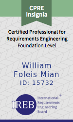
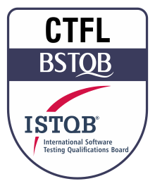
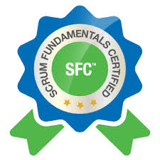
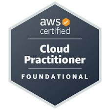

William Mian
Github: github.com/williammian
Email: william_mian@yahoo.com.br
Formação Acadêmica
Análise de Sistemas
Universidade São Francisco - USF, 2002 - 2005
Curso focado em desenvolver, analisar, projetar, implementar e atualizar sistemas de informação para diversos setores. Além de prover habilidades na área de banco de dados, infraestrutura computacional, gestão, entre outras, possibilitando a criação de estruturas de programas compatíveis com as necessidades das empresas.
Certificações

|
Oracle Certified Associate, Java SE 8 Programmer - OCAJPOracle, 2019 Certificação que valida conhecimentos em programação Java, incluindo sintaxe, estruturas de controle, classes, objetos e manipulação de dados, demonstrando uma compreensão fundamental da linguagem. |
|  |
Certified Professional for Requirements Engineering, Foundation Level - CPRE-FLABRAMTI (Associação Brasileira de Melhoria em TI), 2024 IREB (International Requirements Engineering Board), 2024 Certificação que valida conceitos fundamentais, métodos e técnicas para elicitação, documentação, validação e gestão de requisitos em projetos de software. |
|  |
Certified Tester Foundation Level - CTFLBSTQB/ISTQB (Brazilian/International Software Testing Qualifications Board), 2024 Certificação que valida o conhecimento fundamental em princípios, processos e técnicas de teste, abrangendo planejamento, design, execução e gestão de testes, além de garantir a qualidade do software. |
|  |
Scrum Fundamentals Certified - SFCSCRUMStudy, 2019 Certificação que valida o conhecimento básico sobre Scrum, um framework ágil para gestão de projetos. Ela abrange os princípios, terminologias, papéis, eventos e artefatos do Scrum, capacitando os profissionais a participarem eficazmente em equipes ágeis. |
|  |
AWS Certified Cloud PractitionerAWS Training and Certification, 2022 Certificação que valida o conhecimento fundamental sobre a AWS (Amazon Web Services) e seus serviços. Ela cobre conceitos básicos de nuvem, segurança, arquitetura, preços e suporte da AWS. |
Cursos, Aperfeiçoamentos, Atualizações
Alura - Cursos de Tecnologia!
Cursos relacionados a Programação, Agilidade, SOLID, Design Patterns, TDD, UML, BPMN, Microservices, Java, Spring (Boot/JPA/Security), API REST, Swagger, DevOps, CI/CD, Docker, Nginx, PostgreSQL, MySQL, NoSQL, BI com Pentaho, Angular, React, Vue, Flutter, AWS, IA, ITIL, entre outros.
Udemy, Devmedia, Algaworks
Cursos, vídeos, artigos e simulados diversos em TI.